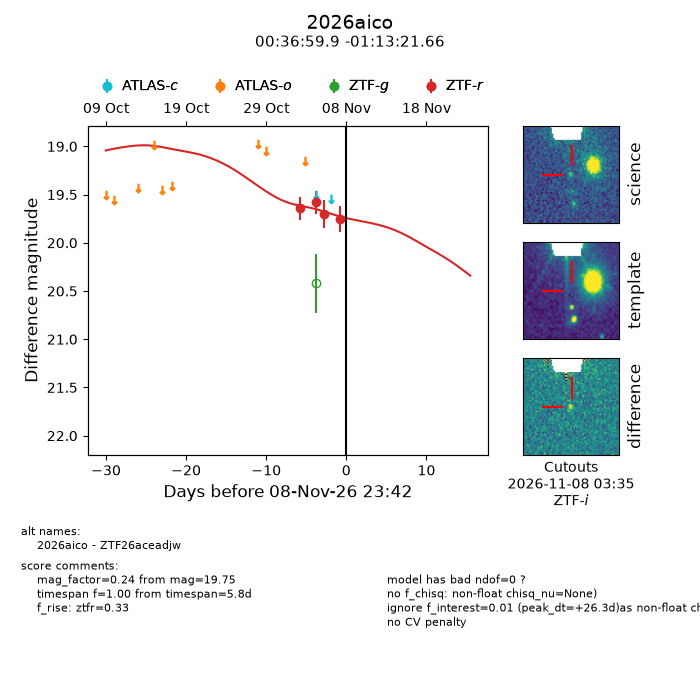
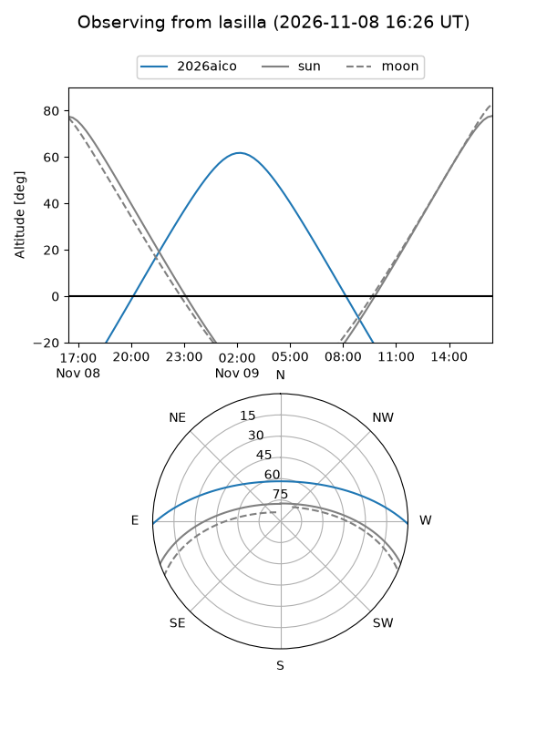
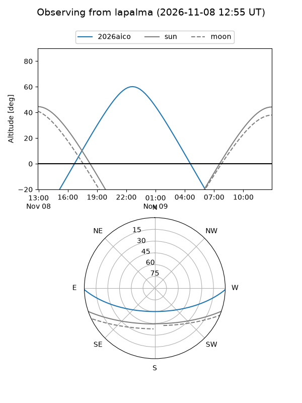
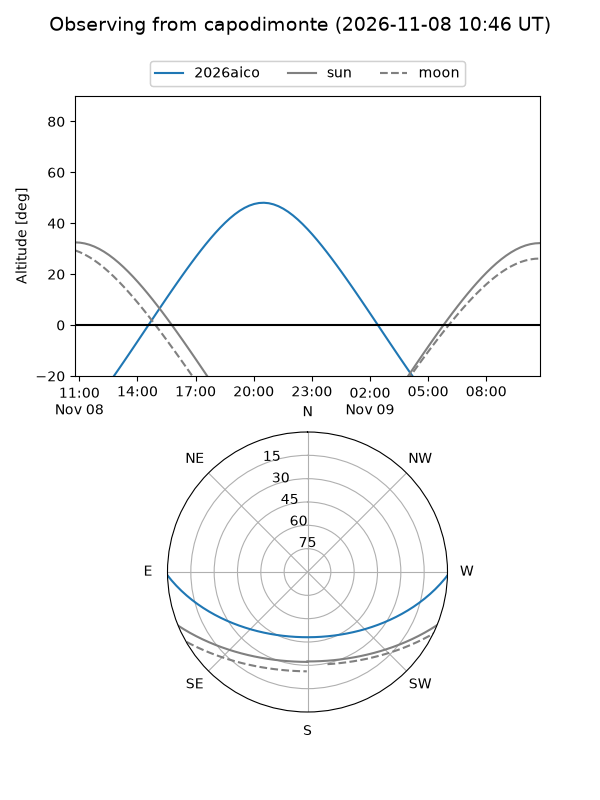
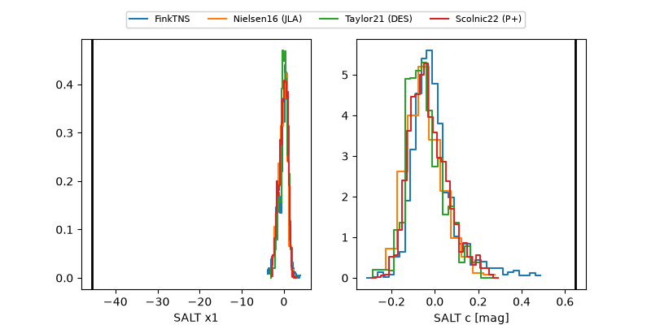

2026aico
Target 2026aico at 2026-11-08 23:44
Aliases and brokers:
FINK-ZTF: ztf.fink-portal.org/ZTF26aceadjw
Lasair-ZTF: lasair-ztf.lsst.ac.uk/objects/ZTF26aceadjw
ALeRCE-ZTF: alerce.online/object/ZTF26aceadjw
YSE-PZ: ziggy.ucolick.org/yse/transient_detail/2026aico
TNS name: wis-tns.org/object/2026aico
Direct TNS query: direct search
alt names
ZTF26aceadjw (ztf,fink_ztf)
2026aico (tns,yse)
Coordinates:
equatorial (ra, dec) = 9.2495,-1.22268
equatorial (HMS+DMS) = 00:36:59.88,-01:13:21.66
galactic (l, b) = (114.7160,-63.86385)
Flags:
peak dt: +26.3
Photometry:
last ztfr=19.75
4 ztfr detections
Lightcurve

Visibility



Additional plots
